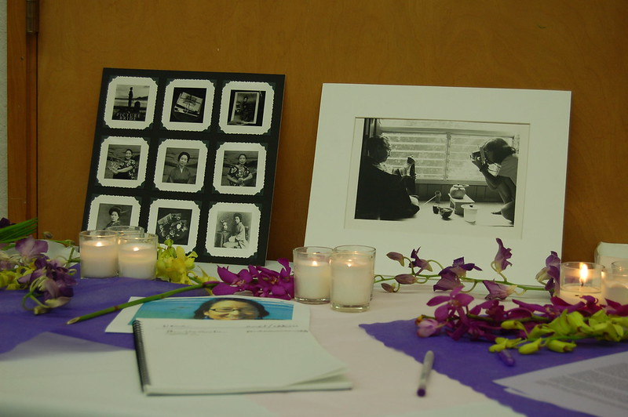

Kayo Hatta and Picture Bride (1995)

Personal Information
Movie Information
Behind-the-Scene
- Ethnicity: Japanese American
- Occupation: Director, Writer, Producer
- Birth: Honolulu, Hawai'i, United States, 1958-03-18
- Death: Accidentally drowned in the San Diego area in 2005
- Education: Stanford University (BA); University of California, Los Angeles, Film School (MA)
- Residence:
- Born in: Honolulu
- Former: New York, San Francisco, Los Angeles, Encinitas
- Title: Picture Bride
- Where to watch: Amazon
- Movie info: The film is a 1995 American feature-length film directed by Kayo Hatta and starring Youki Kudoh, Akira Takayama, Tamlyn Tomita, Cary-Hiroyuki Tagawa, and Toshirō Mifune. The film was released in 1995 by Miramax Films.
- Based on: Real stories about Japanese young women journeying to Hawai'i to marry Japanese men who were plantation workers
- Awards: The Sundance Film Festival Audience Award in 1995 for Best Dramatic Film
- Genre:
- Kayo Hatta talked about the genre types she intended to create and why a dramatic film is important in reaching broad audiences.
Source
- Kayo Hatta aimed for a compelling narrative beyond docu drama.
Source
- Theme: Kayo Hatta talked about her artistic interpretation of history in the film to reflect ethnic perspectives as a theme.
Source
- Research: To prepare for the film, Kayo Hatta did primary research interviewing actual picture brides with the help of local historian Barbara Kwakami.
Source
- Cultural background: Kayo Hatta had an activist background and did a lot of work in community organizing in San Francisco.
Source
- Concept development: Kayo Hatta explained what she meant by saying "a woman's point of view" and a Japanese story in the concept development of the film Picture Bride.
Source
- Experiment: Kayo Hatta made short clips as an experiment/exercise for the feature film.
Source
- Film technique: Kayo Hatta applied documentary techniques in filming the fictional romance Picture Bride.
Source
- Collaborator:
- Screenwriter: Kayo Hatta worked with her sister Mari to produce the Picture Bride screen script.
Source
- Actor:
- Kayo Hatta talked about the casting decision she made for the main character Riyo played by Youki Kudoh.
Source
- Kayo Hatta discussed the casting decision to choose the Asia American actor Tamlyn Tomita.
Source
- Kayo Hatta talked about her choice: let Cary-Hiroyuki Tagawa play Kanzaki.
Source
- They chose to let Toshiro Mifune play the Benshi, the silent picture narrator.
Source
- Crew: Kayo mentioned the contribution of her crew in making the filming happen.
Source
- Producer: Kayo thanked her producers, the women behind her for making this film happen, Diane Mark and Lisa Onodera.
Source
- Fund support: She applied for grants from the American Film Institute. But later both Kayo Hatta and Tamlyn Tomita also mentioned the fund and support from the local communities in Hawai'i.
Source
- Challenge: Kayo Hatta talked about her concerns when the famous Japanese actor Mifune agreed to participate and whether he would have complaints when working with a woman director. Kayo Hatta talked about the challenges during the filming due to the location problem because they were close to a military base and there were helicopter sounds during the filming. The production house was set in old abandoned plantation workers' homes and red dirt was everywhere. Kayo had to balance between the ambitious scene planning and the actual shooting due to insufficient funding.
Source
- Anecdote: Kayo made this film for people, not for awards. They returned to Hawai'i to show the film to the family and community.
Source